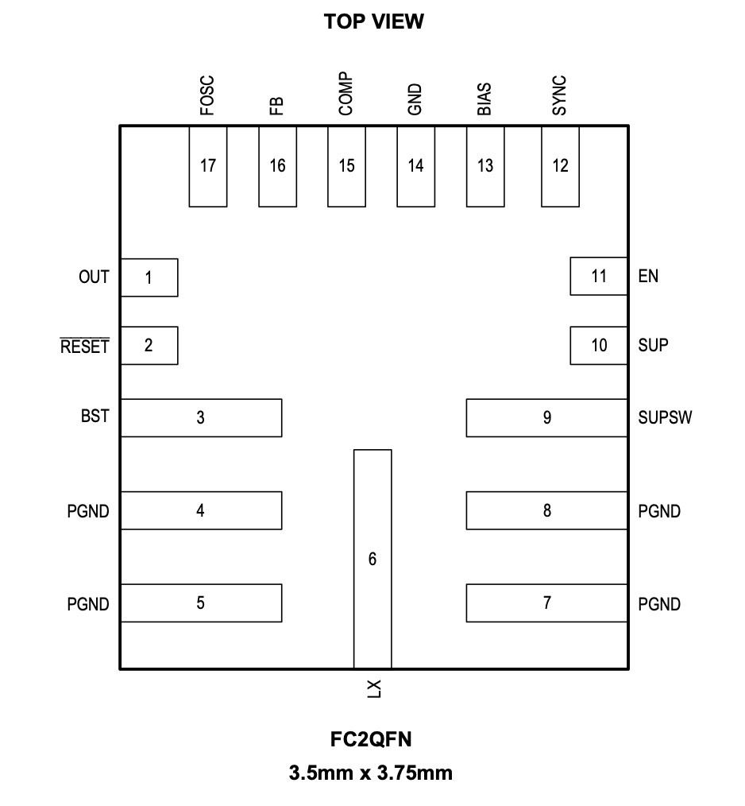

MAX20004 / MAX20006 / MAX20008

Pin Description
| PIN | NAME | FUNCTION |
|---|---|---|
| 1 | OUT | Switching Regulator Output. OUT also provides power to the internal circuitry under certain conditions. |
| 2 | RESET | Open-Drain, Active-Low RESET Output. To obtain a logic signal, pullup RESET with an external resistor. |
| 3 | BST | High-Side Driver Supply. Connect a 0.1μF capacitor between LX and BST for proper operation. |
| 4,5,7,8 | PGND | Power Ground. Connect all PGND pins together. |
| 6 | LX | Inductor Connection. Connect LX to the switched side of the inductor. |
| 9 | SUPSW | Internal High-Side Switch Supply Input. SUPSW provides power to the internal switch. Bypass SUPSW to PGND with 0.1μF and 4.7μF ceramic capacitors. Place the 0.1μF capacitor as close as possible to the SUPSW and PGND pins, followed by the 4.7μF capacitor. |
| 10 | SUP | Voltage Supply Input. SUP supplies the internal linear regulator. Connect SUP directly to SUPSW as close as possible to the IC. SUP and SUPSW are connected together internally. |
| 11 | EN | SUP Voltage-Compatible Enable Input. Drive EN low to disable the device. Drive EN high to enable the device. For a safe startup, ensure that VSUP > 7.5V when EN is toggled high. |
| 12 | SYNC | Connect SYNC to GND or leave unconnected to enable skip-mode operation under light loads. Connect SYNC to BIAS or to an external clock to enable fixed-frequency forced-PWM-mode operation. When driving SYNC externally, do not exceed the BIAS or OUT voltage. |
| 13 | BIAS | Linear Regulator Output. BIAS supplies the internal circuitry. Bypass with a minimum 2.2 µF ceramic capacitor to ground. The BIAS pin can transition from 5V to VOUT after startup. |
| 14 | GND | Analog Ground. |
| 15 | COMP | Error-Amplifier Output. Connect an RC network from COMP to GND for stable operation. |
| 16 | FB | Feedback Input. Connect an external resistive divider from OUT to FB and GND to set the output voltage. Connect FB to BIAS to set the output voltage to 5V or 3.3V. |
| 17 | FOSC | Resistor-Programmable Switching Frequency Setting Control Input. Connect a resistor from FOSC to GND to set the switching frequency. |